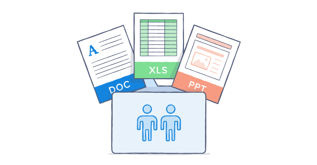
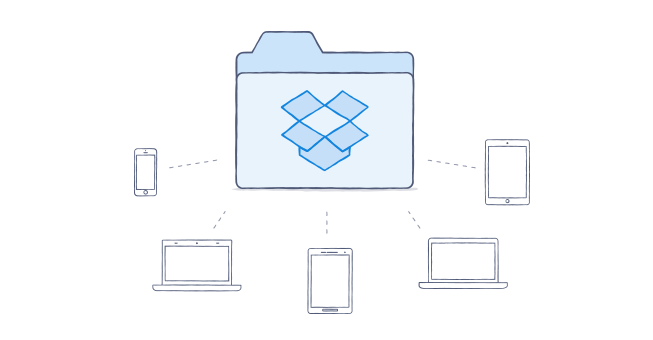
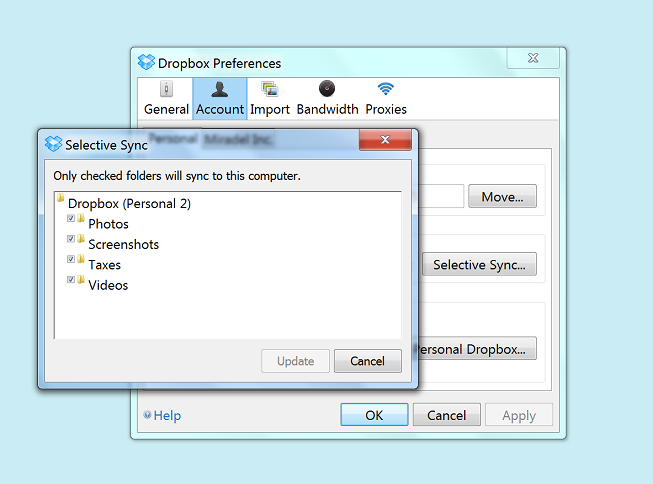

Add your team's files
Move your files into Dropbox to keep them secure, and start sharing them with your team.
Adding your files to Dropbox is easy, especially with the Dropbox desktop application. Just drag and drop files and folders into your Dropbox folder, and we'll take care of the rest.
Everything you store inside Dropbox is private until you're ready to share it.
Adding files to Dropbox

In most cases, adding files to Dropbox is as easy as dragging and dropping files into the Dropbox folder on your desktop. It can handle files and folders of any size or number and, better yet, if your computer ever loses it's internet connection during a sync, Dropbox will pick up right where you left of once it comes back again.
Note: If you're moving large amounts of data into the folder, the initial sync may take some time depending on your Internet connection. Please be patient!
If you're worried about the initial sync hogging your bandwidth and hard drive storage, here are a few tips:
- Try moving over active files first - that way, your team won't miss a beat. For older files, you can move them into Dropbox in stages. Some teams like to sync large batches of documents overnight, or during the weekend.
- Look into a 3rd party data migration provider. A quick internet search can turn up some reputable vendors that help companies move data to services like Dropbox.
- Use Selective Sync to move files off your hard drive and onto the Dropbox website (see below).
Tips for migrating lots of data
In most cases, adding files to Dropbox is as easy as dragging and dropping files into the Dropbox folder on your desktop. It can handle files and folders of any size or number and, better yet, if your computer ever loses it's internet connection during a sync, Dropbox will pick up right where you left of once it comes back again.
Note: If you're moving large amounts of data into the folder, the initial sync may take some time depending on your Internet connection. Please be patient!
If you're worried about the initial sync hogging your bandwidth and hard drive storage, here are a few tips:
- Try moving over active files first - that way, your team won't miss a beat. For older files, you can move them into Dropbox in stages. Some teams like to sync large batches of documents overnight, or during the weekend.
- Look into a 3rd party data migration provider. A quick internet search can turn up some reputable vendors that help companies move data to services like Dropbox.
- Use Selective Sync to move files off your hard drive and onto the Dropbox website (see below).
Saving your hard drive space using Selective Sync

When you start saving files in Dropbox, they'll take up hard drive space just like regular files do. If you're worried about running out of hard drive space while migrating data to Dropbox, use our Selective Sync feature.
Selective Sync is how you choose which folders are synced to a computer. Here are some important things to keep in mind:
- By default, your folders are saved on our website and on your computer. Just like your other folders, they will take up space on your hard drive.
- With Selective Sync, you can decide to have certain folders not sync to your computer. These folders will not show up in your Dropbox folder, but will still be available on the Dropbox website.
- Selective Sync needs to be set up on each computer individually. This way, you can choose which files are accessible on each.
We recommend using Selective Sync for files and folders you don't access very often, but it is also great for moving large amounts of data to Dropbox during your initial migration.
To free up hard drive space using Selective Sync:
- Add your files and folders to your Dropbox and wait for them to sync (see above for details).
- Click on the Dropbox icon in your system tray or menu bar.
- Click on the gear icon and then select Preferences.
- Go to the Account tab and pick which account (personal or work) you'd like to manage.
- Find the "Selective Sync" section and click Change Settings.... You'll see a list of all the folders in your Dropbox. By default, they will all have a checkmark next to their names, indicating they're saved on both your computer and on our website.
- Deselect the checkmark next to the folder's name if you want to remove it from your hard drive.
- When you click Update, the files will automatically be removed from your computer, but will still be available on our website.

Important: If you delete files from your Dropbox folder instead of using Selective Sync to free up space, they'll be deleted from your other linked devices. They'll also be deleted from the devices of anyone you've shared the files with. Be careful!
Have more questions? Check out these helpful articles:
- ? How do I select which folders to sync to my computer?
Was this article helpful?
:) Yes
:( No
← Previous
Next →